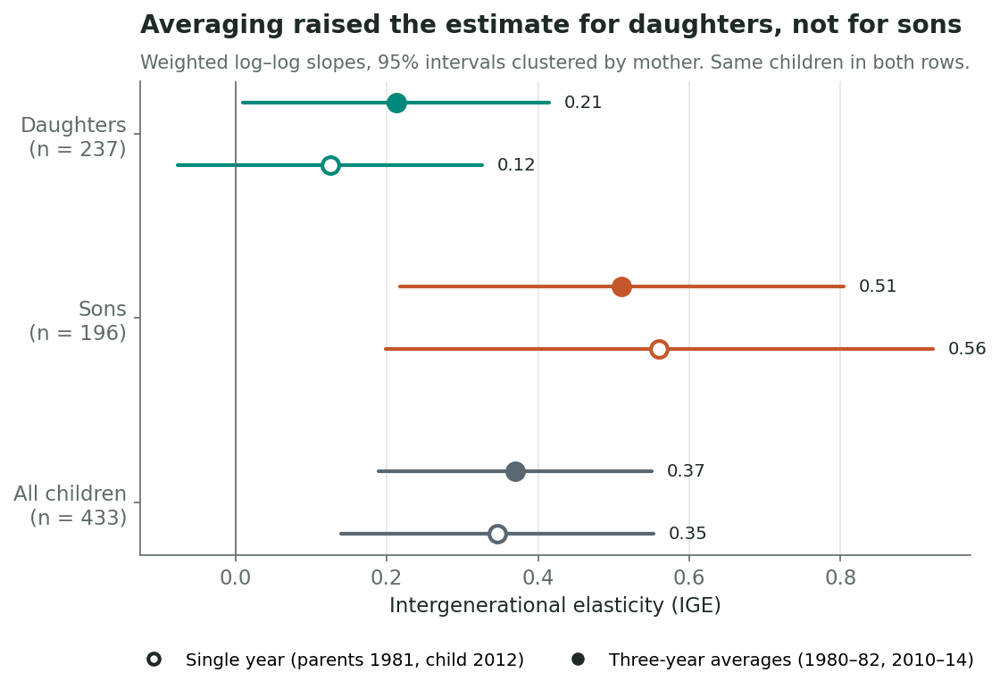
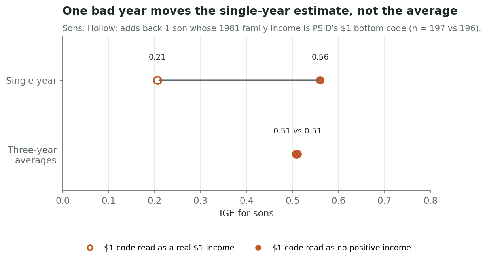
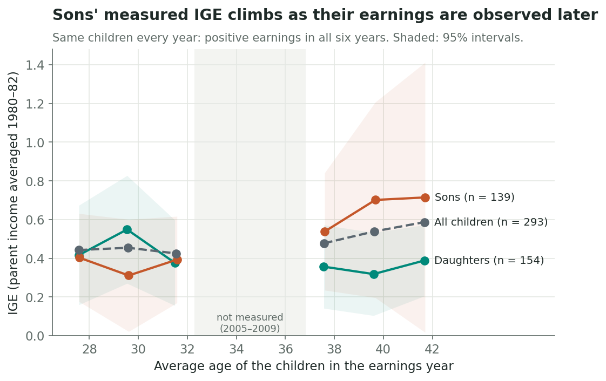

Match Parents and Children with SQL in Python
Link two generations in the PSID, build their income histories, and see why one year of income can mislead you about mobility.
Does a richer childhood relate differently to daughters’ and sons’ adult earnings? To find out, you first have to connect the generations. In this tutorial you’ll use SQL inside Python to link children to their mothers in the Panel Study of Income Dynamics (PSID), build income histories for both, and estimate the intergenerational elasticity (IGE):
\[\log(\text{child income}) = \alpha + \beta\,\log(\text{parent income}) + \varepsilon\]
An IGE of 0.4 means 10% higher parental income is associated with roughly 4% higher adult-child income. It measures relative income persistence, not a causal effect or the probability of earning more than your parents. You’ll see how the estimate changes with the income window and measurement age.
You need: basic Python, pandas and SQL. sqlite3 ships with Python.
1. Load the data into SQLite
You need two free PSID files: a Data Center extract of 48,171 people (IDs, sex, birth year, weights, family membership and income for 1981–83, 2001–05 and 2011–15) and the Parent Identification File, which lists each person’s birth mother and father. The README lists every variable to request. code/01_import.py turns them into five tables:
import sqlite3
import numpy as np
import pandas as pd
con = sqlite3.connect("data/working/blog6.sqlite")| Table | One row per | Key |
|---|---|---|
people |
person | id68, pn |
parent_links |
child × parent | child_id68, child_pn |
membership |
person × interview | id68, pn, wave |
family_income |
family × interview | wave, family_id |
cpi |
year | year |
Two identifier rules matter. A person is identified by the pair (id68, pn); neither number is unique alone. A family_id is reassigned every interview, so it only means something together with wave.
2. Match children to mothers with SELECT and JOIN
Join people to itself, once as the child (c) and once as the mother (p):
SELECT c.id68 AS child_id68, c.pn AS child_pn, c.sex, c.weight,
p.id68 AS parent_id68, p.pn AS parent_pn
FROM people AS c
JOIN parent_links AS l
ON c.id68 = l.child_id68 AND c.pn = l.child_pn
AND l.parent_type = 'birth_mother'
JOIN people AS p
ON p.id68 = l.parent_id68 AND p.pn = l.parent_pn
WHERE c.birth_year BETWEEN 1970 AND 1974;SELECT picks the columns, with aliases to tell child from mother apart. JOIN ... ON matches on both parts of the ID. WHERE keeps children born 1970–74. This returns 1,771 children. A LEFT JOIN version of the same query (in 02_match.sql) counts the children whose link fails.
To execute that SQL inside Python, assign the query above to a string named query, then run:
pairs = pd.read_sql_query(query, con)
print(pairs.head())read_sql_query sends the SQL to SQLite and returns a pandas DataFrame. The complete script saves the query’s result as a database table for the next joins. On a fictional example, the output looks like this:
| child | birth_year | parent | parent_id68 | parent_pn |
|---|---|---|---|---|
| Cleo (daughter) | 1972 | Ana (mother) | 101 | 1 |
| Eli (son) | 1973 | Dee (mother) | 205 | 2 |
3. Attach income, joining on wave and family
For each childhood interview (1981–83, about income years 1980–82), keep the family income only if the child and mother lived in the same family that year. Convert it to 2020 dollars with the BLS CPI-U for the income year:
SELECT pr.child_id68, pr.child_pn, f.income_year,
f.total_income * (SELECT cpi FROM cpi WHERE year = 2020) / k.cpi AS real_income
FROM pairs AS pr
JOIN membership AS mc ON mc.id68 = pr.child_id68 AND mc.pn = pr.child_pn
AND mc.wave IN (1981, 1982, 1983) AND mc.current_member = 1
JOIN membership AS mp ON mp.id68 = pr.parent_id68 AND mp.pn = pr.parent_pn
AND mp.wave = mc.wave AND mp.family_id = mc.family_id
AND mp.current_member = 1
JOIN family_income AS f ON f.wave = mc.wave AND f.family_id = mc.family_id
JOIN cpi AS k ON k.year = f.income_year;Children’s adult earnings observations cover income years 2000, 2002, 2004 and 2010, 2012, 2014. A CASE expression selects the reference-person or spouse earnings field according to each person’s role that year.
This extract combines reference-person total labor income with spouse labor income excluding farm and business income. Those definitions differ. The estimates below illustrate the matching and measurement workflow; they are not a like-for-like test of daughters’ versus sons’ total earnings persistence. A change in household role can also change the earnings coverage for the same person. Before drawing a substantive gender or age comparison, construct comparable earnings measures across roles and years and rerun the analysis. The README lists the fields used here.
4. Aggregate first with GROUP BY
Each child now has three parent years and three adult years. Joining them directly pairs every year with every other: on the real data, 4,554 rows for 506 children, nine each. Collapse each generation to one row per child first:
SELECT child_id68, child_pn,
AVG(real_income) AS parent_mean,
MAX(CASE WHEN income_year = 1981 THEN real_income END) AS parent_single
FROM parent_history
GROUP BY child_id68, child_pn
HAVING COUNT(real_income) = 3;GROUP BY makes one group per child. The aggregate AVG collapses the group to its mean, and MAX(CASE ...) pulls out the 1981 value. HAVING filters groups, keeping children with all three years. The same query on 2010, 2012 and 2014 gives child_mean and child_single (2012). Joining the two summaries leaves one row per child.
| child_id68 | child_pn | parent_mean | parent_single |
|---|---|---|---|
| 101 | 31 | 48,000 | 18,000 |
| 205 | 30 | 42,000 | 43,000 |
Fictional output: Cleo’s family had a bad 1981, which drags her single-year value far below her average.
After requiring positive incomes and a valid 2015 longitudinal weight, 237 daughters and 196 sons remain. Most losses come from children not interviewed in all of 2011–15 (full counts in results/sample_flow.csv).
5. Estimate the IGE: one year vs. three
Fit a weighted log–log regression on the same children with each income measure (full code with standard errors clustered by mother in 04_estimate.py). The function below calculates its slope with an intercept:
def fit_ige(d, child_col, parent_col):
y = np.log(d[child_col]); x = np.log(d[parent_col]); w = d["weight"]
xm, ym = np.average(x, weights=w), np.average(y, weights=w)
return np.sum(w * (x - xm) * (y - ym)) / np.sum(w * (x - xm) ** 2)
Averaging raises the point estimate for daughters (0.12 → 0.21) and slightly for all children (0.35 → 0.37), but lowers it for sons (0.56 → 0.51). All three bootstrap intervals for the change include zero, so these data do not establish a change from averaging. The estimates also retain the earnings-coverage limitation above.
Why averaging can help. Annual income includes persistent differences and temporary fluctuations. The unweighted correlation of log parental family income in 1980 and 1982 is 0.81 among retained children with positive values in both years. Under a classical measurement-error model, temporary noise in parental income attenuates the slope; averaging can reduce that noise. It does not remove all measurement error or guarantee a higher IGE. The data contain an extreme case: one son’s family income for 1980 and 1981 is PSID’s $1 code, meaning “$1 or less, including zero and negative.” Read it as a real $1 income, and that one family moves the sons’ single-year IGE from 0.56 to 0.21. The averaged IGE rounds to 0.51 under both treatments in this particular sensitivity check. That is not a general guarantee that averaging removes an influential observation.

6. Watch for life-cycle bias
Averaging can reduce temporary noise, but it does not resolve timing. If earnings trajectories differ by parental background, an early-career snapshot may misrepresent the relationship at mature ages. Follow the same 293 children with positive earnings in all six observed years, holding parental income and weights fixed:

Sons’ point estimate is 0.40 at average age 28 and 0.71 at 42; daughters’ corresponding estimates are 0.42 and 0.39. These are descriptive age-and-year comparisons, not identification of life-cycle bias alone: period conditions, earnings coverage, and selection into positive earnings may also matter. In the separate three-observation-window comparison, the sons’ age-40-minus-age-30 change has a 95% bootstrap interval spanning zero.
In the main sample, daughters’ averaged point estimate is 0.30 below sons’, but the difference’s 95% bootstrap interval is -0.67 to 0.03, which includes zero. We cannot conclude a gender difference from these estimates, or attribute the pattern to caregiving, hours, or participation without examining those mechanisms. Final-wave weights do not fully correct the additional selection from requiring linked income histories, and the mother-clustered intervals do not implement the full survey design.
Takeaways
- SQL makes the match explicit. Join on the two-part person key, join family data on
waveandfamily_id, andGROUP BYbefore joining generations. - One year can be a noisy snapshot. Averaging can improve the measure of long-run resources, but a short average remains imperfect and need not increase the estimated slope.
- Check timing and comparability. Estimates vary across observed ages and years. Wide intervals, selective samples, and inconsistent earnings coverage limit what these comparisons establish.
Try it: inspect how the single-year estimate changes when you average parental income alone (Parent averaged only in results/ige_results.csv). This holds children’s earnings fixed and separates that change from averaging both generations.
Data and code
Data: PSID public-use data (Survey Research Center, University of Michigan, 2026), Data Center extract and Parent Identification File (2023); BLS CPI-U annual averages. Code and results: code/ and results/; run 00–06 in order (see the README). research.zip has everything except PSID microdata, which cannot be redistributed.